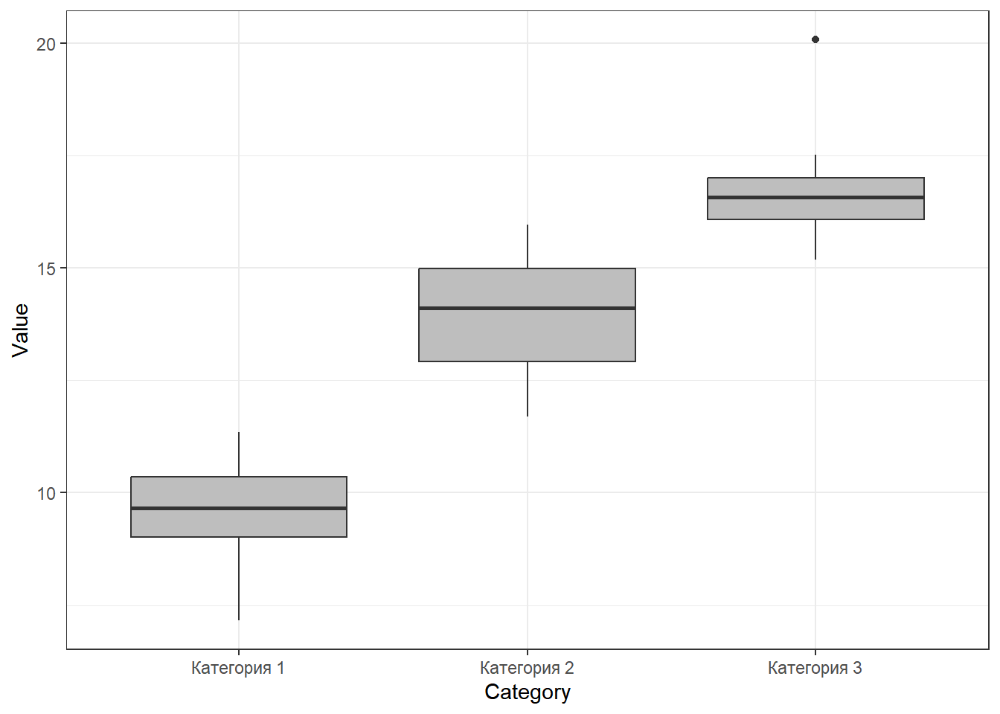

Презентации и данные
Внимание! Распределение тем по датам занятий очень условное. Возможно, что все переиграется по мере развития событий.
1. Знакомство с R
Презентация: 01_intro_to_r.html
Online практика: 01_intro_to_r_online_training.html
Код для работы на лекции: 01_intro_to_r_code.R
Данные для работы на лекции: hydrology_2022.xls
В помощь начинающим
Вот небольшой список наиболее ходовых функций, которые позволяют составлять самые простые скрипты на языке R
Домашнее задание №1
- Домашнее задание:Вариант 1
- Домашнее задание:Вариант 2
- Данные для выполнения домашнего задания: catsM.xls
Ваша миссия: Необходимо создать файл скрипта (с обязательным комментированием действий), в котором будут решены задачи одного из вариантов ДЗ. Распределение вариантов см. в таблице внизу страницы.
Работы необходимо прислать на электронную почту polydora[]rambler.ru не позднее 23:59 среды 8.10.2025.
2. Данные и их визуализация с использованием пакета
ggplot2
- Код для работы на лекции: 02_intro_ggplot.R
- Данные для работы на лекции #1:
- Данные для работы на лекции #2:
Домашнее задание №2
Первая часть ДЗ
Откройте датасет iris. Это данные по измерению размеров
нескольких частей цветка у трех видов ирисов: setosa, versicolor,
virginica.
Строение цветка ириса
Каждый должен взять себе (отфильтровать) только одну часть данных.
- Вариант 1. Работает с видом “setosa”.
- Вариант 2. Работает с видом “versicolor”.
- Вариант 3 Работает с видом “virginica”.
Всем нужно будет (пользуясь любыми методами, хоть на бумажке)
посчитать сколько раз в полученном датасете встретилось каждое из
значений в переменной iris$Sepal.Length. После подсчета
необходимо создать датафрейм, в котором в первой колонке будут стоять
значения переменной iris$Sepal.Length, а во второй колонке
будет указано сколько раз встретилось данное значение. Если подсчеты
делали не с помощью R-кода, а на листочке, то результаты надо будет
набить в экселе.
Для примера, решение аналогичного задания, для вида “setosa” по
переменной iris$Sepal.Width будет выглядеть вот так.
Sepal.Width | Frequency |
|---|---|
2.3 | 1 |
2.9 | 1 |
3 | 6 |
3.1 | 4 |
3.2 | 5 |
3.3 | 2 |
3.4 | 9 |
3.5 | 6 |
3.6 | 3 |
3.7 | 3 |
3.8 | 4 |
3.9 | 2 |
4 | 1 |
4.1 | 1 |
4.2 | 1 |
4.4 | 1 |
## Warning: пакет 'flextable' был собран под R версии 4.3.3Sepal.Width | Frequency |
|---|---|
2.3 | 1 |
2.9 | 1 |
3 | 6 |
3.1 | 4 |
3.2 | 5 |
3.3 | 2 |
3.4 | 9 |
3.5 | 6 |
3.6 | 3 |
3.7 | 3 |
3.8 | 4 |
3.9 | 2 |
4 | 1 |
4.1 | 1 |
4.2 | 1 |
4.4 | 1 |
Полученный датасет необходимо сохранить в формате .csv.
Вторая часть ДЗ
Используя полученный датасет, необходимо построить вот такой график (с соблюдением цветов и заливок) .
Задание повышенной сложности
Нарисуйте картинки, приведенные в этом документе (надо прислать код, который нарисует требуемое)
Дедлайн, как всегда, 23:59 дня перед следующим занятием.
3. Описательная статистика
Домашнее задание №3
Внимание! Вы молодцы и очень неплохо уже пишите коды. Однако надо научиться теперь делать эти коды достоянием общественности. Поэтому теперь подробное комментирование действий в домашних работах будем считать обязательным. За отсутствие подробных комментариев оценки будут снижаться.
Часть 1.
Ваша миссия: Напишите код, который будет выводить следущие значения для тех переменных, которые даны ниже (в каждом варианте будет свой набор данных).
- Одновременно минимум,максимум, 1-й, медиану и 3-й квартили
В каждом датасете есть несколько категорий, для каждой из них надо вывести указанные выше описательные статистики (например, для каждого вида нужно дать отдельные характеристики).
Датасеты:
Вариант 1. Переменная
Petal.Lengthдля каждого из видов из датасетаirisВариант 2. Вес цыплят
weightна 21-й день наблюдения (переменнаяTime) для каждого из четырех типов диет (Diet) из датасетаChickWeight.Вариант 3. Расход топлива
mpgу автомобилей с разным количеством цилиндров (переменнаяcyl) из датасетаmtcars. Важно! переменнуюcylнеобходимо сделать фактором (используйте функцию as.factor()).
Часть 2.
Для своего датасета необходимо построить картинку подобную вот этой

4. Модель нрмального распределения, как основа для тестирования статистических гипотез
Презентация о свойствах нормального распределения
Презентация о точечных и интервальных оценках параметров нормального распределения
Домашнее задание
Часть 3.
Скачайте датасет, соответствующий вашему варианту. Это датафрейм, состоящий из пяти переменных. Найдите, какие из переменных подчиняются нормальному распределению. Ваш анализ должен быть отражен в скрипте. Ответ о том, подчиняется ли та или иная переменная нормальному распределению, приведите в виде комментария в скрипте. В этом же комментарии постарайтесь оценить, что именно не соотвествует модели нормального распределения.
Вариант 1. Датасет для варианта 1
Вариант 2. Датасет для варианта 2
Вариант 3. Датасет для варианта 3
Часть 4.
Используя датасеты из предыдущего задания (там, где мы строили боксплоты), вычислите выборочные средние и среднеквадратичные отклонения для каждой из групп категорий, которые представлены в этих датасетах.
Вариант 1. Переменная
Petal.Lengthдля каждого из видов из датасетаirisВариант 2. Вес цыплят
weightна 21-й день наблюдения (переменнаяTime) для каждого из четырех типов диет (Diet) из датасетаChickWeight.Вариант 3. Расход топлива
mpgу автомобилей с разным количеством цилиндров (переменнаяcyl) из датасетаmtcars. Важно! переменнуюcylнеобходимо сделать фактором (используйте функцию as.factor()).
Часть 5.
Используя датасеты Части 4 (для своего варианта), определите границы 95% доверительного интервала для каждой из категорий.
Доверительный интервал вычислется как \(\bar{x} \pm t\cdot SE\)
Величину \(t\) (это 2.5% или 97.5% квантили t-распределиния Стьюдента) пока определяем по таблице. НО! Если можете определить квантили t-распределения с использованием функции qt() то будет +10%.
В этой таблице: \(df = n - 1\), где \(n\) - объем выборки. Берем столбец для p = 0.05 (доверительная вероятность: P = 1 - p = 0.95). Зная \(n\), находим величину t.
Кроме того, вам нужно вычислить величину стандартной ошибки, которая вычисляется по следующей формуле:
\[ SE = \frac{Sd}{\sqrt{n}} \]
\(Sd\) - стандартное отклонение.
5. Тестирования статистических гипотез с помощью t-критерия Стьюдента
Домашнее задание №4
Домашнее задание по теме двухвыборочный t-критерий

Размерная струкутра народов Срдиземья по Дж.Р.Р.Толкиену
Представьте себе, что вы идете по лесам Средиземья с отрядом эльфов. Все участники похода были независимо и случайно отобраны из числа этого народа. И вдруг, вдалеке, вы заметили отряд неких существ. Вам необходимо принять решение о том, свои это или чужие. Вы (с помощью магии, наверное) смогли как-то измерить рост фигур из этого отряда. Сделайте обоснованный вывод на основе данных, которые у вас имеются. Результаты необходимо описать в виде текста (комментарии в скрипте с решением, в котором надо сформулировать нулевую и альтернативную гипотезы и сделать выбор между ними) и визуализировать в виде столбчатой диаграммы (необходимо написать код, который ее построит).
Вариант 1.
<<<<<<< Updated upstreamРост эльфов из вашего отряда (см): 182, 183, 185, 176, 183, 188, 183, 187, 176, 182, 177, 184, 178, 173, 177
Рост фигур (см): 163, 162, 158, 165, 168, 162
Вариант 2.
Рост эльфов из вашего отряда (см): 177, 176, 185, 180, 184, 186, 181, 173, 177, 181, 187, 184, 178, 177, 184
Рост фигур (см): 180, 185, 189, 186, 173, 198, 189, 197
Вариант 3.
Рост эльфов из вашего отряда (см): 181, 178, 181, 188, 176, 178, 185, 180, 170, 186, 188, 176, 179, 189, 186
Рост фигур (см): 152, 151, 140, 148, 158, 163, 163, 152, 151, 155, 162, 151, 147, 146, 138
=======Рост эльфов из вашего отряда (см): 173, 180, 174, 180, 173, 183, 184, 184, 182, 176, 175, 181, 176, 182, 184
Рост фигур (см): 173, 162, 171, 165, 166, 169, 161, 157, 166, 161, 167
Вариант 2.
Рост эльфов из вашего отряда (см): 172, 176, 179, 180, 172, 183, 170, 183, 194, 184, 184, 183, 180, 187, 183
Рост фигур (см): 192, 181, 187, 197, 188, 185, 191, 187, 188, 204, 189, 199, 192, 174
Вариант 3.
Рост эльфов из вашего отряда (см): 177, 182, 177, 184, 188, 187, 177, 182, 183, 184, 180, 179, 183, 180, 181
Рост фигур (см): 153, 150, 155, 142, 148, 141, 150, 145, 144, 149, 146, 144, 149, 155, 164, 151
>>>>>>> Stashed changes6. Дисперсионный анализ
Домашнее задание №5
Скачайте файл, в котором находятся данные по метеорологическим
наблюдениям на территории Кандалакшского заповедника. Файл поместите в
папку Data (ну или как она у вас называется)
Ваша миссия
Необходимо выяснить наблюдаются ли различия между тремя летними месяцами (нужно будет провести дисперсионный анализ) в том параметре, котоый будет у вашего варианта.
Проведите анализ остатков и оцените, выполняются ли условия применимости ANOVA.
Визуализируйте с помощью столбчатой диаграммы (с доверительными интервалами) средние значения. Проведя post-hoc сравнение средних, обозначьте на рисунке те средние, которые отличаются друг от друга по критерию Тьюки.
Варианты:
Вариант 1. Анализ солености (переменная S)
Вариант 2. Анализ температуры воздуха (переменная Air_T)
Вариант 3. Анализ температуры воды (переменная Water_T)
7. Двухфакторный дисперсионный анализ
=======
7. Простая линейная регрессия
>>>>>>> Stashed changesДомашнее задание №6
Ваша миссия
Во всех случаях надо провести двухфакторный дисперсионный анализ.
Все результаты надо сопроводить короткими текстами с рассказом что вы увидели и что это означает (вставляете в виде комментариев). Во всех случаях надо не забыть произвести проверку на условия применимости анализа.
Рекомендуется ознакомиться с оригинальными работами, на базе которых были получены датасеты. Ссылки на работы даются в комментариях к скрипту.
Задания
Перечень домашних заданий (для проверки)
- HW1 - Знакомство с R
- HW2 - Знакомство с ggplot2
- HW3 - Описательная статистика
- HW4 - t-критерий (Задача про Средиземье)
- HW5 - Однофакторный дисперсионный анализ (Задача про Гидрологические данные)
- HW6 - Двухфакторный дисперсионный анализ (Задачи про пингвинов, рис и сендвичи)
8. Регрессионный анализ
=======8. Множественная линейная регрессия и общие линейные модели
>>>>>>> Stashed changes9. Введение в литературное программирование.
Оценки за домашние задания
| Name | HW_1 | HW_2 | HW_3 | HW_4 | HW_5 | HW_6 | HW_7 | ИТОГ (% от финальной оценки) |
|---|---|---|---|---|---|---|---|---|
| Авакян Кристина Зауровна | 100 | 130 | 100 | 90 | 100 | 100 | NA | 18 |
| Васина Анна Дмитриевна | 100 | 100 | 120 | 100 | 100 | 100 | NA | 18 |
| Дубинина Анна Сергеевна | NA | NA | NA | NA | NA | NA | NA | 0 |
| Егорова Татьяна Андреевна | NA | NA | NA | NA | NA | NA | NA | 0 |
| Емельянова Екатерина Викторовна | 100 | 90 | 60 | 100 | 90 | 100 | NA | 15 |
| Ковалева Александра Борисовна | 100 | 130 | 130 | 100 | 100 | 100 | 100 | 22 |
| Кузнецов Никита Сергеевич | 100 | 100 | 130 | 100 | 100 | NA | NA | 15 |
| Куликова Светлана Сергеевна | 100 | 130 | 130 | 100 | 100 | 100 | 100 | 22 |
| Панкратова Ксения Артемовна | NA | NA | NA | NA | NA | NA | NA | 0 |
| Сарнэт Виктория Павловна | 100 | 100 | 100 | 100 | 100 | 100 | NA | 17 |
| Синицкая Юлия Сергеевна (Захарова) | NA | NA | NA | NA | NA | NA | NA | 0 |
| Харламова Мария Андреевна | NA | NA | NA | NA | NA | NA | NA | 0 |
| Цуранова Елизавета Алексеевна | 100 | 110 | NA | NA | NA | NA | NA | 6 |
| Чернышова Александра Алексеевна | NA | NA | NA | NA | NA | NA | NA | NA |
Зачетные проекты
Коллеги!
Вот распределение проектов по участникам нашего курса.
- Авакян Кристина Зауровна: Проект № 1
- Васина Анна Дмитриевна: Проект № 2
- Емельянова Екатерина Викторовна: Проект № 3
- Ковалева Александра Борисовна: Проект № 4
- Кузнецов Никита Сергеевич: Проект № 5
- Куликова Светлана Сергеевна: Проект № 6
- Сарнэт Виктория Павловна: Проект № 7
- Цуранова Елизавета Алексеевна: Проект № 8
Описане проектов
Проект №1
Данные взяты из работы
Tager, I. B., Weiss, S. T., Rosner, B., and Speizer, F. E. (1979). Effect of parental cigarette smoking on pulmonary function in children. American Journal of Epidemiology, 110, 15-26.
Rosner, B. (1990). Fundamentals of Biostatistics, 3rd Edition. PWS-Kent, Boston, Massachusetts.
Источник данных: http://www.statsci.org/data/general/fev.html
Датасет: fev.xls. лист «tidy_data»
Структура данных
Age - Возраст
FEV - Объем легких при выдохе (литры) (forced expiratory
volume)
Height - Рост (дюймы)
Sex - пол (Male or Female)
Smoker - некурящие (Non), курящие (Current)
Ваша миссия.
Вы должны написать небольшой текст с использованием технологии литературного программирования на языке RMarkdown. В этом тексте должны быть все части, которые присутствуют в научной статье: введение, материал и методика, результаты, обсуждение и список литературы. В каждой из частей достаточно минимального количества текста. В этом тексте вы должны ответить на следующие вопросы.
Различается ли объем легких у курящих и не курящих людей?
Построив линейную регрессионную модель, вы должны описать как зависит объем легких от возраста у курящих и некурящих людей.
Итоговый отчет должен включать в себя .RMD файл, из которого будет сгенерирован вордовский файл, который включат в себя все описанные выше главы, а также хотя бы один рисунок, хотя бы одну таблицу, хотя бы одну формулу. Все указанные элементы должны быть сгенерированы из чанков RMD файла. Вы присылаете мне на почту polydora@rambler.ru .RMD файл и .doc файл. Пример фала RMD файла приведен в приложении.
Проект №2
Данные взяты из работы Tager, I. B., Weiss, S. T., Rosner, B., and Speizer, F. E. (1979). Effect of parental cigarette smoking on pulmonary function in children. American Journal of Epidemiology, 110, 15-26. Rosner, B. (1990). Fundamentals of Biostatistics, 3rd Edition. PWS-Kent, Boston, Massachusetts. Источник данных: http://www.statsci.org/data/general/fev.html
Датасет: fev.xls. лист «tidy_data»
Структура данных
Age - Возраст
FEV - Объем легких при выдохе (литры) (forced expiratory
volume)
Height - Рост (дюймы)
Sex - пол (Male or Female)
Smoker - некурящие (Non), курящие (Current)
Ваша миссия. Вы должны написать небольшой текст с использованием технологии литературного программирования на языке RMarkdown. В этом тексте должны быть все части, которые присутствуют в научной статье: введение, материал и методика, результаты, обсуждение и список литературы. В каждой из частей достаточно минимального количества текста. В этом тексте вы должны ответить на следующие вопросы.
Различается ли объем легких у мужчин и женщин?
Проведя двухфакторный дисперсионный анализ, вы должны выяснить различается ли объем легких у взрослых (больше 21 года) и молодежи (21 год и менее) в зависимости от того курят они или нет.
Итоговый отчет должен включать в себя .RMD файл, из которого будет сгенерирован вордовский файл, который включат в себя все описанные выше главы, а также хотя бы один рисунок, хотя бы одну таблицу, хотя бы одну формулу. Все указанные элементы должны быть сгенерированы из чанков RMD файла. Вы присылаете мне на почту polydora@rambler.ru .RMD файл и .doc файл. Пример фала RMD файла приведен в приложении.
Проект №3
Данные из работы Secher et al. (1987), European Journal of Obstetrics, Gynecology, and Reproductive Biology, 24: 1–11.
Датасет secher.xls
На УЗИ у плода измеряли межтеменной и абдоминальный диаметр. После рождения измеряли вес младенца.
Переменные
bwt – вес новорожденного (г)
bpd – Межтеменной диаметр (мм)
ad – абдоминальный диаметр (мм)
Ваша миссия. Вы должны написать небольшой текст с использованием технологии литературного программирования на языке RMarkdown. В этом тексте должны быть все части, которые присутствуют в научной статье: введение, материал и методика, результаты, обсуждение и список литературы. В каждой из частей достаточно минимального количества текста. В этом тексте вы должны ответить на следующие вопросы.
Сравните вес новорожденного, у которого Межтеменной диаметр больше медианы диаметра с весом новорожденного, у которого Межтеменной диаметр меньше или равен медиане диаметра.
Постройте две модели, описывающие связь веса новорожденного, с размерами параметров, измеренных с помощью УЗИ.
Итоговый отчет должен включать в себя .RMD файл, из которого будет сгенерирован вордовский файл, который включат в себя все описанные выше главы, а также хотя бы один рисунок, хотя бы одну таблицу, хотя бы одну формулу. Все указанные элементы должны быть сгенерированы из чанков RMD файла. Вы присылаете мне на почту polydora@rambler.ru .RMD файл и .doc файл. Пример фала RMD файла приведен в приложении.
Проект №4
Измеряли вес и рост кормящих матерей и оценивали сколько молока высасывает ребенок.
Датасет «kfm» находится в пакете ISwR (его надо будет установить). Для загрузки данных используйте команду data(kfm).
Переменные
dl.milk объем высосанного молока (dl/24h).
sex пол ребенка.
weight вес ребенка (kg).
ml.suppl объем докорма (ml/24h).
mat.weight вес матери (kg).
mat.height рост матери (cm).
Ваша миссия. Вы должны написать небольшой текст с использованием технологии литературного программирования на языке RMarkdown. В этом тексте должны быть все части, которые присутствуют в научной статье: введение, материал и методика, результаты, обсуждение и список литературы. В каждой из частей достаточно минимального количества текста. В этом тексте вы должны ответить на следующие вопросы.
Различается ли количество потребляемого молока у мальчиков и девочек.
Постройте две регрессионные модели. Первая должна описывать связь объема высосанного молока в зависимости с весом ребенка, вторая связь объема высосанного молока с весом матери.
Итоговый отчет должен включать в себя .RMD файл, из которого будет сгенерирован вордовский файл, который включат в себя все описанные выше главы, а также хотя бы один рисунок, хотя бы одну таблицу, хотя бы одну формулу. Все указанные элементы должны быть сгенерированы из чанков RMD файла. Вы присылаете мне на почту polydora@rambler.ru .RMD файл и .doc файл. Пример фала RMD файла приведен в приложении.
Проект №5.
Вам нужно проанализировать емкость легких у разных групп людей.
Датасет: tlc.csv
Переменные: - age – возраст.
sex– пол (1 - женский; 2 - мужской)height– рост (см)tlc– объем легких (л)
Ваша миссия. Вы должны написать небольшой текст с использованием технологии литературного программирования на языке RMarkdown. В этом тексте должны быть все части, которые присутствуют в научной статье: введение, материал и методика, результаты, обсуждение и список литературы. В каждой из частей достаточно минимального количества текста. В этом тексте вы должны ответить на следующие вопросы.
Различается ли объем легких у мужчин и женщин?
Постройте две регрессионные модели. Первая должна описывать связь объема легких с ростом у мужчин, вторая – у женщин.
Итоговый отчет должен включать в себя .RMD файл, из которого будет сгенерирован вордовский файл, который включат в себя все описанные выше главы, а также хотя бы один рисунок, хотя бы одну таблицу, хотя бы одну формулу. Все указанные элементы должны быть сгенерированы из чанков RMD файла. Вы присылаете мне на почту polydora@rambler.ru .RMD файл и .doc файл. Пример фала RMD файла приведен в приложении.
Проект №6.
Вам нужно проанализировать вес новорожденных детей у курящих и некурящих матерей.
Датасет birthwt.csv.
Переменные
age— возраст материlwt— вес матери до беременностиrace— раса (1-белые, 2-черные, 3-другие)smoke— курение во время беременности (1-да,2-нет)ptl— число предыдущих преждевременных родовht— гипертензияui— гипертонус маткиftv— число визитов к врачу в последний триместрbwt— вес новорожденного, г
Ваша миссия. Вы должны написать небольшой текст с использованием технологии литературного программирования на языке RMarkdown. В этом тексте должны быть все части, которые присутствуют в научной статье: введение, материал и методика, результаты, обсуждение и список литературы. В каждой из частей достаточно минимального количества текста. В этом тексте вы должны ответить на следующие вопросы.
Различается ли вес новорожденного у курящих и некурящих матерей?
Проведя двухфакторный дисперсионный анализ ответьте на вопрос есть ли связь веса младенца с расой матери (афроамериканцы (2) VS белые (1)) и ее возрастом (Молодые (21 год и моложе) VS взрослые (старше 21 года)).
Итоговый отчет должен включать в себя .RMD файл, из которого будет сгенерирован вордовский файл, который включат в себя все описанные выше главы, а также хотя бы один рисунок, хотя бы одну таблицу, хотя бы одну формулу. Все указанные элементы должны быть сгенерированы из чанков RMD файла. Вы присылаете мне на почту polydora@rambler.ru .RMD файл и .doc файл. Пример фала RMD файла приведен в приложении.
Проект №7.
Вам нужно проанализировать вес новорожденных детей у курящих и некурящих матерей. Датасет birthwt.csv.
Переменные
age— возраст материlwt— вес матери до беременностиrace— раса (1-белые, 2-черные, 3-другие)smoke— курение во время беременности (1-да,2-нет)ptl— число предыдущих преждевременных родовht— гипертензияui— гипертонус маткиftv— число визитов к врачу в последний триместрbwt— вес новорожденного, г
Ваша миссия. Вы должны написать небольшой текст с использованием технологии литературного программирования на языке RMarkdown. В этом тексте должны быть все части, которые присутствуют в научной статье: введение, материал и методика, результаты, обсуждение и список литературы. В каждой из частей достаточно минимального количества текста. В этом тексте вы должны ответить на следующие вопросы.
Различается ли вес новорожденного у молодых матерей (21 год и моложе) и взрослых женщин (старше 21 года)?
Проведя двухфакторный дисперсионный анализ ответьте на вопрос, есть ли связь веса младенца с расой матери (афроамериканцы (2) VS белые (1)) и тем, курит ли мать или нет.
Итоговый отчет должен включать в себя .RMD файл, из которого будет сгенерирован вордовский файл, который включат в себя все описанные выше главы, а также хотя бы один рисунок, хотя бы одну таблицу, хотя бы одну формулу. Все указанные элементы должны быть сгенерированы из чанков RMD файла. Вы присылаете мне на почту polydora@rambler.ru .RMD файл и .doc файл. Пример фала RMD файла приведен в приложении.
Проект №8.
Вам нужно проанализировать вес новорожденных детей у курящих и некурящих матерей.
Датасет birthwt.csv.
Переменные
age— возраст материlwt— вес матери до беременностиrace— раса (1-белые, 2-черные, 3-другие)smoke— курение во время беременности (1-да,2-нет)ptl— число предыдущих преждевременных родовht— гипертензияui— гипертонус маткиftv— число визитов к врачу в последний триместрbwt— вес новорожденного, г
Ваша миссия. Вы должны написать небольшой текст с использованием технологии литературного программирования на языке RMarkdown. В этом тексте должны быть все части, которые присутствуют в научной статье: введение, материал и методика, результаты, обсуждение и список литературы. В каждой из частей достаточно минимального количества текста. В этом тексте вы должны ответить на следующие вопросы.
Различается ли вес новорожденного у представительниц афроамериканской и белой расы.
Постройте две регрессионные модели. Первая должна описывать связь веса новорожденного с возрастом курящей матери, вторая – связь веса младенца с возрастом некурящей женщины.
Итоговый отчет должен включать в себя .RMD файл, из которого будет сгенерирован вордовский файл, который включат в себя все описанные выше главы, а также хотя бы один рисунок, хотя бы одну таблицу, хотя бы одну формулу. Все указанные элементы должны быть сгенерированы из чанков RMD файла. Вы присылаете мне на почту polydora@rambler.ru .RMD файл и .doc файл. Пример фала RMD файла приведен в приложении.
Приложение к проектам
В архиве находится пример выполненного проекта (методы, которые там используются мы с вам не проходили, но это не важно).
Распакуйте файл RMD_Project_example.zip в некоторую
папку, которую назначьте рабочей папкой. Далее откройте в RStudio файл
fucbys.Rproj. Далее откройте файл Ershova_2023_short.Rmd и запустите
Knit.
Теоретический тест
Вам нужно будет пройти тест из 16 вопросов с множественным выбором.
Финальная оценка
Финальная оценка складывается из оценки за домашние задания (20% от финальной оценки), оценки за проект (50% от финальной оценки) и оценки за тест (30% от финальной оценки).
Далее распределение оценок выглядит следующим образом
- Сумма баллов по всем трем позициям > 70% - отлично
- Сумма баллов по всем трем позициям > 50%, но < 70% - хорошо
- Сумма баллов по всем трем позициям > 20%, но > 50% - удовлетворительно
- Сумма баллов по всем трем позициям < 20% - неудовлетворительно